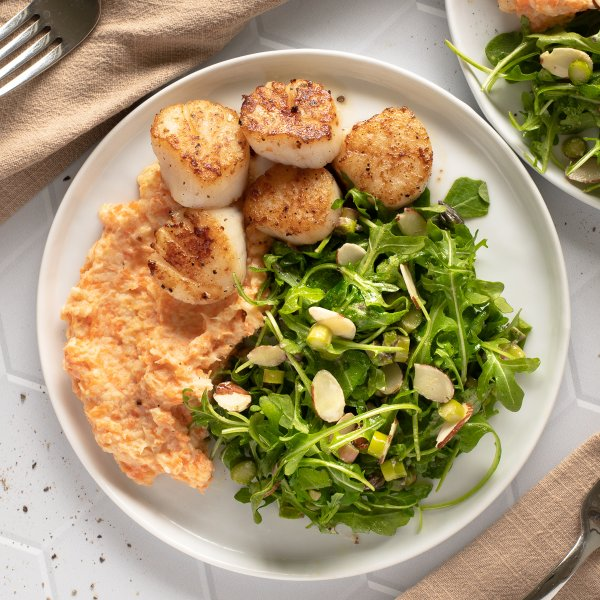

Seared Scallops with Carrot-Parsnip Mash & Arugula Asparagus Salad

Prep Time
40 min
Nutrition (per serving)
597.4 kcalCalories
28.4 gProtein
39.4 gCarbs
38.1 gFat
Full nutrition table
| Calories | 597.4 kcal |
| Total fat | 38.1 g |
| Saturated fat | 15.9 g |
| Trans fat | 0.8 g |
| Cholesterol | 122.3 mg |
| Sodium | 754.6 mg |
| Carbohydrates | 39.4 g |
| Fiber | 10.5 g |
| Sugars | 13.9 g |
| Protein | 28.4 g |
| Potassium | 1374.4 mg |
| Calcium | 209.9 mg |
| Iron | 4.9 mg |
| Vitamin A | 1824.2 IU |
| Vitamin C | 32.5 mg |
| Vitamin D | 17.8 IU |
Cookware
Ingredients
- ¼ cupalmonds, sliced
- 2 small bunchesasparagus
- 1 (5 oz) pkgbaby arugula
- 4 mediumcarrots
- 8 fl ozheavy whipping cream
- 4 mediumparsnips
- 1 ½ lbsea scallops
- apple cider vinegar
- black pepper
- Dijon mustard
- extra virgin olive oil
- honey
- salt
Steps
- Wash and dry the fresh produce. (Skip the arugula if it came pre-washed.)4 medium parsnips
4 medium carrots
2 small bunches asparagus
1 (5 oz) pkg baby arugula - Trim, peel, and medium dice parsnips and carrots; place both in a large pot and cover with hot water (from the tap). Cover and bring to a boil over high heat; once boiling, reduce to a simmer and cook until veggies are soft, 10-12 minutes.
- Meanwhile, place oil, vinegar, Dijon, honey, salt, and pepper in a medium bowl; whisk to combine the dressing.4 tsp extra virgin olive oil
4 tsp apple cider vinegar
2 tsp Dijon mustard
1 tsp honey
¼ tsp salt
¼ tsp black pepper - Snap or cut off the woody ends of the asparagus, then cut spears into ¼-inch thick pieces. Add to the bowl with the dressing, toss to combine, and set aside.
- Preheat a large skillet over medium-high heat.
- While the skillet heats up, pat scallops dry with paper towels and place on a plate; season with salt and pepper on both sides.1 ½ lb sea scallops
½ tsp salt
½ tsp black pepper - Once the skillet is hot, add oil and swirl to coat the bottom. Add scallops to the skillet in a single layer and cook until they develop a nice sear and are opaque throughout, 1½-2 minutes per side. Once done, transfer to a clean plate and loosely cover with aluminum foil.2 tbsp extra virgin olive oil
- When the veggies are done, drain in a colander and return to the pot. Add cream, salt, and pepper; using a potato masher, mash until semi-smooth.8 fl oz (1 cup) heavy whipping cream
½ tsp salt
¼ tsp black pepper - Add arugula and almonds to the bowl with the dressing and asparagus; toss to combine the salad.¼ cup almonds, sliced
- To serve, divide carrot-parsnip mash, scallops, and salad between plates. Enjoy!